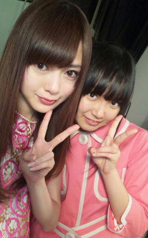
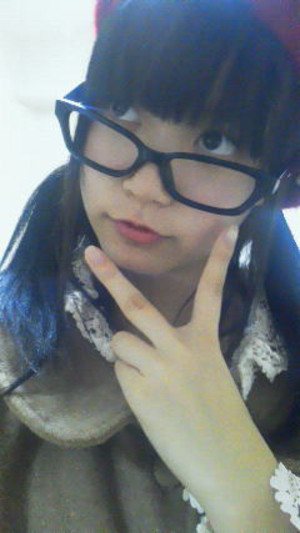
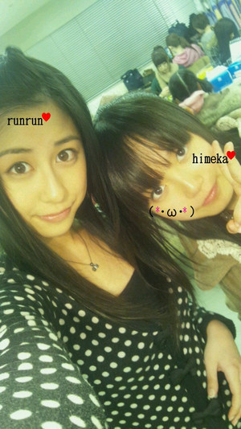

返回列表-BACK TO INDEX
るんるんお誕生日おめでとーう(^O^)!
るんるん（斎藤ちはるchan）好きだよ
るんるんとひめたんテンションおんなじなんだもん♪
いくちゃん（生田絵梨花chan）とねっ
春から高校生だよ。乃木坂も学校も、どっちも頑張るんるん(*'∀`)ノ
制服のまま遊びに行くの、ひめたんずっと憧れてるんだからねー。
あれ。何か言おうとしたのに忘れた。何だったっけ思い出したらメールするー!!!
うん。はぴば(*・ω・*)/
そいえば、いくちゃんとひめたんは夜になると異常にハイになるんだけど
るんるんはまったく逆らしい。
ひめたんいつもお仕事帰りのロケバスで、るんるんのことつっつくの。
ごめんね。眠たい時は寝て下さい('・ω・`)
しかも朝はひめたん割とテンション低いからね。話しで盛り上がるのは夕方がピークだねー。
撮影お疲れさまいやん♪

今日はいっぱい寝たにも関わらず、異常なくらいに眠かったー(ρω-)ノ
ひめたんがこっくりこっくりして、ヘアメイクさんを困らせました。
本当にごめんなさいっ。
２回も電車降りるの寝過ごすし、危うく車内に忘れ物するところだった。
異常なほどの眠さ、伝わったかな('・・)？
 コスモクロック21の中心の時計は見えましたか?
コスモクロック21の中心の時計は見えましたか?
あー駅からは見えんかった('・・`)
けど、前にままと近くに行ったとかに見ましたよ♪
見るだけでも楽しいですよねーっ
でも乗ったらなお楽しい!
「ω」ってなんて読むかわかる？
へ？
ω←読み方なんかあるんですか？
教えて下さいー気になる!
グリーンジャンボ宝くじ最高５億だけど、
ひめたん、当たっら、周りにしゃべる派？かくす派かな？
必要以上にしゃべると思う。
ああー怖い怖い(д)
大丈夫。ひめたん乃木坂のオーディションと受験で
運をすべて使い果たしちゃったから...。
ひめたんも自分でＣＤ買っちゃうのかな？
そりゃもちろん買うしかー(・∀・)!!!
ひめたんは自分を動物にたとえるとなに？
はむすたー(ω)
はむすたーに似てるってかわごさん（川後陽菜chan）やほかのメンバーに言われてから
はむすたーにも愛着が沸くの最近♪♪
「いい歳して...」って笑われたけど、感動する心に年齢関係ないもんね。
どう思いますか？
感動するのに年齢なんて関係ないー(o>ω<o)!
いろんなことに感動する心を持ってる人、ステキだと思います♪♪
ダンスが好きってことは、運動は得意なの？
いやいやそれが全然で...。
よく言われるけど、ダンスと運動神経て結び付かないですよ？
ひめたん陸上・水泳等々めっちゃ下手ですもんっ
強いていうなら球技がちょっとできるかなー？
桜井さんはメンバーでも怜香せんせいって呼ばれちゃってるんですかww
メンバーの呼び方も最初のころと少しずつ変わってきてるのかな？
いやいやひめたんが勝手に呼んでるだけです(*^^*)
ひめたんちょいちょいアレンジ入れちゃうからねー!
広島弁で画びょうのことを「押しピン」って言うの？
え？押しピンて方言なの？
押しピンて全国共通だと思っとったー(・∀・)!
ひめたんはちっちゃい時から押しピン派!
マック・ラーメン屋・ファミレス・焼肉屋一人で行けないところは？
ひめたん的にマックがボーダーライン...。
頑張ればラーメン屋さんファミレス辺りは行けるかもしれない。
焼肉屋に1人で行く勇気はないです('・ω・`)
一人カラオケは大丈夫？
お部屋に入って最初の20分は落ち着かないんだけどね。
しばらくしたら余裕(^^)v
お腹いっぱい歌えるしねー♪カラオケは1人で行くべきっ!
この記事(その82)の写メ伊達眼鏡カナ？
ひめたんって、視力悪いの？
ひめかちゃんは視力いい方ですか？悪い方ですか？
メガネはだて？(=^ェ^=)
だて(ω)!
ひめたん視力いいからねー。
手袋とマフラーどっちが好き？？
マフラー(o>ω<o)♪
マフラーの方が可愛いじゃん←共感してくれたらいいな。
(*´・ω・*)ひめたん
2012/02/17 00:20｜
昨日から「左胸の勇気」のダンスを練習してるんだけど
やっぱこの曲好き(*^^*)
メロディも歌詞もダンスも好き。
昨日1日でダンスをぜーんぶ詰め込んだの。でも全然苦にならなくて!
むしろ不思議なくらい頭に入ってきて。
そいえばレコーディングのときも、すっと歌詞覚えたなー。
アンダーの子に「持ち唄の中でどの曲が1番好き？」て聞くと
左胸の勇気!って答える子は多いと思う。
 今度アンケートとるしかーあ(・∀・)!
今度アンケートとるしかーあ(・∀・)!
これからもっと練習して、いつかみなさんの前でも披露したい(*^^*)
いきいきしたアンダーメンバーを見てほしい!
このダンスが完璧にそろうようになったら、乃木坂の団結力はよりぱわーあっぷだよだよっ
あ。この子。紹介する!
(*´・ω・*)
ひめたんの分身です♪
みゅみゅ（若月佑美chan）がいきなり「(*´・ω・*)←ひめか」てメールくれたんよ
そしたらなんだか愛着が沸いてきた♪♪
ひめたんこんな顔しとるんー？
たちまちひめたんが今日送ったメールの６割くらい登場しとる♪
だってかーいいんだもん(^ω^)

明日１６日、二十歳の誕生日なんだひめたんに１０代最後だから祝って欲しいな
はたち!おめでとうございます∪・ω・∪
お誕生日てのは年に1度しかないですもんね♪
ステキな日になりますように(∀)/
有意義な1日になること、ひめたんも祈っておりますー♪♪
今日入試が終わったんですけど、まだもう一回あるので、
なんか応援メッセージ??的なのください（笑っ）
とりあえずお疲れ様でした(^^)!
ひめたんのお友達も同じ感じのメールをくれたので、みんなにエール送りましたよ♪
日本中の受験生のみなさまー!
最後まで精一杯全力で!リラックスして!応援してます(ω)
男同士のチョコ渡しってどう思う？
アリ(・∀・)!!!
だってばれんたいんだものっ。
フィレオフィッシュが安い時は2個も3個も買っちゃうよ！
ひめたんはそういう好きな食べ物って何かあるかな？
えー何だろう。お菓子はいっぱい買いたくなりますよねっ
て。今は我慢してるんだから、この話はやめてー(>_<)!
友達と外食のときは何を食べること多い？
マックかファミレス。
ざ★中学生!
ひめたんは無意識で東京弁を話せるようになったのかな？
ひめたん何を話す時も無意識ですよっ
でも、この前メンバーに「最近めっちゃ標準語じゃないー？」て言ったら
「どこがやー!」ってなった(*^^*)
広島のお好み焼きで一番好きな具は何ですか？
「お好み焼きの具」て答えにふさわしいかはわからんけど
チーズ入れたらやーばい美味しいよ(*^^*)/
キャベツはもちろんたっぷり多め、オタフクソースもたっぷり多めね♪
ひめたんって料理できるの？
ひとりではできないに等しい('・ω・`)
カルピス、オレンジジュース、リンゴジュース、ピーチジュース??、牛乳
の中でどれが一番好きですか？
やっぱりんごじゅーす★!
「ゆず」の唄う「桜木町」は知ってるかな?
へーえ初めて聞いたです!
よしっ忘れんうちに聞いてみるしかー(*^^*)
遠州弁(←静岡の方言)って知ってる？
よく、まいまいが言ってるヤツだよ～（笑
「～だに？」←これですね？
同じ静岡出身でもみゅみゅはあんま言わない!
静岡って広いんですねー♪
ひめたんは勉強や遊びで徹夜つまりオールする！？
朝と夜どっちが強い！？
受験生の時はわりとオールしてお勉強してましたよ(`・・)/
朝は弱い。何なら起きて勉強してる方がってなる人かな!
最近の口癖
「あーそれブログに書こ。」
「可愛さに欠けるー。」
ブログに書こゆーて、書くときにはさっぱり忘れるんだけどね('・・`)
ひめたん
2012/02/16 00:03｜
はっぴーばれんたいん!
残念ながら今年は手作りはできなかったけど、心を込めてメッセージカード書いたってことで
あなたに...(*・ω・*)
チョコと一緒に入浴剤とかプレゼントしたのよー。
そしたられなりん（市來玲奈chan）が
「うち最近このハートのジェルみたいなの欲しくてずっと探してたのー(^^)」
ってめっちゃ喜んでくれました。
「れなりんが喜んでくれたってブログに書くねっ」
てれなりんに言ったら、せっちゃん（宮澤成良chan）が
「うちもすごい嬉しいよーいっぱいお風呂入るよー。」
って言って、２人で言い争ってました(*^3^*)くるっくー
レッスン行ったら、まさに女子校のばれんたいん状態で。
「みんなーはいはい1個ずつ取ってー♪」
てな感じで幸せー(*´∀｀*)
「アイドルの手作りチョコ食べれるって幸せよねー(*・ω・*)」
て玲香せんせい（桜井玲香chan）が言ってたよ。
そーゆー玲香せんせいも立派なアイドルじゃないですかー♪
チョコありがとうねっ(。・ω・。)/
今日はいこまちゃん(生駒里奈chan)と相合傘した。
だってばれんたいんだものー♪
ひめたんが「あー雨降ってるー傘ないしー。」って気にせずに歩いてたら
横からいこまちゃんがすっと傘を差してくれましたかっこいいねーあー(*^^*)
いこまちゃん好きよ/
きゃすか(齋藤飛鳥chan)とも相合傘しました(^^)
いいでしょー？だってばれんたいんだものっ
で今日のよるごはんに、「バナナチップスinヨーグルト」食べた∩^ω^∩
ステキでしょ？美味しそうでしょ？
美味しいのよねーみゅみゅ（若月佑美chan）!!
プレーンヨーグルトを買います。
さくさくバナナを買います。
入れます。食べます。
きゃー
ひめたんはいっかい目が合うとなかなか反らさないの。
いや何も考えてないけど、見入っちゃうんだよね(*/ω＼*)
ひめたんは乗り物酔いとかは大丈夫ですか？
車に長い時間乗ってると酔うかなー。
バスとか電車とか新幹線とかは大丈夫です('・ω・`)
ひめたんはバス旅行好き？
バスでは、後ろで友達と盛り上がる人、それとも最前で景色を楽しむ人？
バス旅行とか行ったことないー。
バスは後ろで盛り上がるのが好き好き(*^^*)
ひめたんポーズとかってある？
今はこれといってないー('ω`)
募集しよっかな!かわいいの思いついたら教えて下さいっ
もう中学校は卒業式しか用がないの？
いやいやまったくそんなことっ!!!
大好きな地元のみんなに早く会いたいですよ(^ω^)
ひめたん何のジュースが好き？
りんごジュースとか好き(*^^*)
スムージーだっけ？そんな感じのも好き!
炭酸は苦手です('・ω・`)
海外は行ったことあるの？
ないー。
こりあ行きたいですこりあ♪
遠出もしてみたいけど、飛行機怖いからなー(>_<)
ひめたんがみたライブとかコンサートで印象に残ってるものってありますか？
Perfumeさんのライブ楽しかったです!
３人のダンスは生で見るとより一層尊敬します。キレイですもん!
ＭＣのときの広島弁もほんわかしたトークも可愛い(*/ω＼*)!!!
ひめたんは広島出身って事でやっぱり野球は広島カープのファンですか？
ってかプロ野球は好きですか？(笑)
野球...。
ごめんなさい普段はあんまり見ないですっ
でも球団の中では一番カープに愛着わくし、応援したくなります(^^)♪
赤ヘルじゃんっ!
ひめたん
2012/02/15 01:30｜
ミタパンブー!
今日はフジテレビで「ミタパンブー」の収録をしてきました(ω)/
三田アナウンサー、パンクブーブーさんと一緒で楽しかったです♪
放送はデビューウィークである2/20(月)～2/23(木)!
24:35～24:45。ちょっと夜遅いけど、頑張っておきてて下さい(ω)
見たことある方には伝わるかもだけど、あの番組ノーカットなんですよー。
あんなことこんなことしました!くるっくー
オンエア見てくださいね？
ぶー(o>ω<o)!
そいえば最近メンバーのみんなから、ひめたんの「口」をよくほめてもらう(*^^*)
「ひめたんてほんとに「ω」て口してるよねー」
「ひめたんの口、好きだよー」
(*/ω＼*)
今度から、ひめたんのチャームポイント「口」にしよっかな。
↑てつぶやいたら、あみあみ(能條愛未chan)とせっちゃん(宮澤成良chan)は賛同してくれたよ(^^)
今日13日誕生日なのです ひめたん祝ってwww
お誕生日おめでとうございます!
いつもコメントありがとうございます。
ステキな1年になりますように。
今年の抱負なんかあったら聞きたいな(*^^*)
人前で、話したり、歌ったりするのに緊張しない方法って何かありますか？
せいたん(畠中清羅chan）いわく、目の前の人のことをじゃがいもっち思って踊っちょんらしい(^O^)
使い方あっとるー？
ひめたんはステージ袖では緊張するけど、人前に出てしまえばへっちゃら♪
部活ってアイドルしながら入れるものなの？
ひめたんなら、やっぱりダンス部かな？
え？両立ってのは大変かなぁ？
今までしてきたコメントは、ひめたんに何を与えられているのか？
何かひめたんのためになってるのか？
何をおっしゃる!!
ひめたんの明日の元気とぱわーと、毎日ブログを書く楽しみになってますよ♪
いつもわくわくしながら見てる(ω)ありがとうございます!
HN言ったけどピンと来なかったかな？？？
ぴーんて来ましたよ(`・ω・')
ああいつもありがとうございますってなった!
柿ピーが目の前にあれば食べますか？
最近はお菓子我慢してるから食べない(;´∩｀)
よっぽどお腹空いてれば食べちゃうかもしれ...
いや食べません←
バラエティーとかで、バンジーとか、ふられたら出来る？
自分から飛び降りるのは怖いから、無理矢理突き落としていただきたい。
いやー怖い怖いこわい!
昨日行ったラゾーナ川崎と桜木町駅周辺は初めて行ったの？
どっちも1度ままと行ったことありますよ(ω)♪
ひめたんは桜木町に来てみてどういう印象をうけた？
まずバス降りてみて、ああ可愛い(^^)!って思いました。
...メンバーの子に言ったら伝わらなかったけど。雰囲気がもうオシャレ!
あたたかい人がたーくさんいて、めっちゃティッシュ配れましたもんっ
駅が広場みたいだったから、ここでぐるカー踊ったら気もちいだろうなあー
と思いつつ踊らなかったけれども♪♪
みなとみらいには観光地が沢山あるけど行ってみたくなったところとかある？
桜木町の駅から見える観覧車に乗ってみたい(o>ω<o)!
ひめたん
2012/02/13 23:58｜
乃木どこ？公開収録参加しました＼(^^)／
#21、#22、ライブ収録、それぞれ内容盛りだくさんて感じで楽しかったー♪
どんなことしたかってのは放送をお楽しみに(*^ω^*)
ゆーわけで今日はライブ収録のこと書いちゃうよっ
そう。今日はみくもってぃ（安藤美雲chan）参加できなかったのが残念だったけど、
乃木坂46 32人で初めてステージに立った日、
アンダーメンバーが初めて乃木坂ファミリーのみなさんにぐるカーを披露した日。
今日のステージに向けてみんなでレッスン頑張ってきました。
今まで選抜の子が頑張ってる姿をみて何となーく想像はしてたけど
フリをそろえるの、いやーそれはそれは難しいのよ(`・ω・')!
しかも今回は32人だからね。いつもの２倍だよ２倍ー!!!
ぐるカーのダンスは、みんなでそろっててこそだからねー。
「へえーそんなとこまで決まりがあるのねー」
てぐらい1っ1っの動きに細かいことこだわって作ってくださってるんです。
改めてみんなとひとつになった感(*・・*)くるっくー
乃木うたは、桜井先生（桜井玲香chan）の振り付けレッスンでみなさん完璧に振り覚えて下さって一緒にサイリウム振ってくださったのー(*^^*)
さっすが乃木坂46のキャプテン、かっこよかった♪
そしてみなさんと一緒に乃木うた踊れて楽しかったです★
サビ以外のダンスも簡単だから、余裕だーって方はぜひ!
ぬあ(・∀・)!
バレンタインが近いねーってことで、今日収録に参加して下さった方全員に
乃木坂46から心を込めてチョコレートを手渡しでプレゼントさせてもらいましたっ
明治ミルクチョコレート!
手作りじゃないじゃんーとか思わんで下さいね(。・ω・。)/
あの板チョコでみなさんが乃木メンおすすめレシピに挑戦するもよし。
ぱりっと豪快に食べちゃうもよし。
食べずに保存するもよし!
はっぴーバレンタイン
ということでー、
今日残念ながら参加できなかったよーって方は
乃木どこ？オンエアを楽しみにしていて下さい(ω)/
ひめたんカメラの奥のみなさんに向かって精一杯手え振ってほほえんだからね♪
ひめたんすまいる(`・ω・')どやー!!!
ひめたんはPerfumeさんと会ったことはあるん？
お会いしたことありますよ(^^)/
以前Perfumeさんの特番収録の中でスクールに遊びに来ていただいたことがあって
スクール生でポリリズム踊ったら喜んでくださってました!
ひめたん、僕のアイドルでもいてくれませんか？？？
もーちろん喜んでっ(*/ω＼*)
いやむしろ嬉しいです♪♪♪
旅行で行ったことのない県どこかありますか？？
逆に言うと北から東京、千葉、神奈川、埼玉、愛知、大阪、岡山、島根、山口、福岡しか
行ったことない(>_<)
今度滋賀と富山にお邪魔しちゃうよー(ω)♪
ひめたんはフレッシュネスバーガー知ってますか?行ったことはありますか?
あー!!!
ちはるんるん（斎藤ちはるchan）と２人で行ったー(*^^*)
ベーコンオムレツバーガーだったかな？名前自信ないけど
そんな感じの食べました♪美味しかったよねーちはるんるん？

ひめたんは鉄板の怖い話とかもってるの？
あるっちゃあるー(ω)/
けど基本怖い話は聞く側に回りますよ!だって怖いんだもん。
北海道のイメージってどんな感じ？
ななみん（橋本奈々未chan）(^ω^)/
ひめたんのおばあちゃんは雪景色を見に北海道行ったことあるんぢゃけど
きれいだったよーって写真見せてもらいました!
広ーくて、寒ーくて、美味しいものがいっぱいあって、自然がきれいで。
行ってみたいもん♪
ひめたんは大阪弁好き？
好き(*^^*)
まっつんななせまるろってぃーべびたんの大阪弁
かわいーい♪♪
HEY×３ひめたん出る？？
ひめたん出ない('・ω・`)
でもみんな頑張っとったけみてほしいです!
ひめたんはどんなスポーツ好き？
自分がやるならバスケ!
これでもバスケ経験者ですからー。
見るなら何だろう。何でも好き(//ω//)
コーラ・サイダー・カルピスソーダ・メロンソーダ・ファンタ
の炭酸の中で、どれが一番好きですか??
カルピスソーダかなー。
最近炭酸が苦手なんよね...
カルピスソーダはひめたん的に５っの中でいっちゃんシュワシュワしてないから!
コーラはちょい炭酸抜けましたってのが好き(∀)
ひめたん
2012/02/13 00:25｜
返回列表-BACK TO INDEX
{kind=link}
{kind=link}
{kind=link}
{kind=link}
{kind=link}
{kind=link}
{kind=link}
{kind=link}